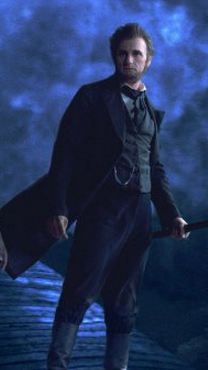
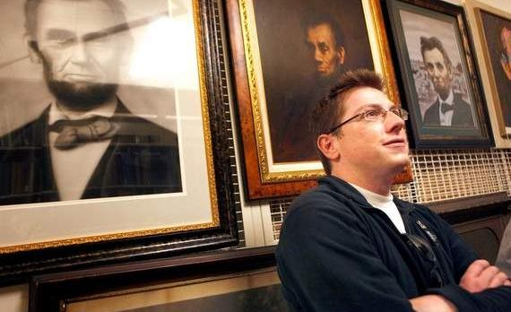

|
On a recent afternoon, Tom Schwartz, the state historian of Illinois, greeted author Seth
Grahame-Smith. They shook hands in the lobby of the Abraham Lincoln Presidential Museum,
then crossed the street to the Abraham Lincoln Presidential Library. They entered an
elevator that carried them beneath the street, to the Lincoln archives. Here, the state
keeps one of five known copies of the Gettysburg Address.
Did Seth want to hold it? Yes, he did.
He had flown in from Los Angeles for the day, to start the tour for his latest
bestseller, Abraham Lincoln: Vampire Hunter. He was starting the tour at the
Abraham Lincoln Presidential Library and Museum--at the request of the Abraham Lincoln
Presidential Library and Museum. Schwartz was thrilled. Everyone was thrilled.
The manager of the gift shop told Grahame-Smith she didn't want to read his book at
first because it seemed so stupid and some of her customers have "been getting bent out of
shape" just because she carries his book--what with that cover of Abe holding a
blood-splattered axe--but she read his book and she's glad she read his book because it's
surprisingly well-done considering that it's about, you know, Abraham Lincoln hunting
vampires.
He smiled. Then he said what he's been saying since last spring, since his previous
book, Pride and Prejudice and Zombies, sold more than one million copies. He said,
"Thanks!"
A curious sequence of events have happened to Seth Grahame-Smith, 34, and Abraham
Lincoln: Vampire Hunter, Last year, Pride and Prejudice and Zombies became an
out-of-left-field hit. Which led to Grand Central Publishing signing him to write a novel
|

Abraham Lincoln: Vampire Hunter makes extensive
use of dramatic landscapes and striking colors, apropos to its gothic
influences
|
about Lincoln's secret war with the undead. Which led to Tim Burton deciding to make an
Abraham Lincoln: Vampire Hunter movie. Which led Grand Central to order a
200,000-copy first printing of Abraham Lincoln: Vampire Hunter. Which led to
shockingly appreciative reviews from the Los Angeles Times and Time
magazine.
Which led, most shockingly of all, to historical institutions and Lincoln scholars
embracing him: Doris Kearns Goodwin, author of the bestselling Lincoln history Team of
Rivals? Yup. She endorsed the book on National Public Radio, no less.
The Smithsonian? It hosted the author recently. The Lincoln Presidential Library and
Museum--the most visited presidential library in the United States?
"I'm a huge Twilight fan," said deputy director Jennifer Tirey. "I have
Twilight things in my office, and I'm always trying to find new things that attract
new audiences, and when I saw this book was coming, I jumped. I got a little concerned
that people would think we were actually supporting vampires. We're not. But we're not
here to cater to historians. We're here to support all sorts of ideas about Lincoln--it's
not like even Lincoln scholars agree on everything related to Lincoln anyway."
Which is why, for a short time, in conjunction with Grahame-Smith's book, the museum
kept a small exhibit dedicated to Lincoln's connections with the gothic--a display that
even included the last axe Lincoln wielded, though probably not against vampires.
The elevator doors opened. Schwartz and Grahame-Smith stepped into a cream-coloured
room. The only sound was the hum of air ducts. Schwartz typed a code into the frame of a
large door. It opened with the loud hiss of sealed air. Schwartz bent down.
He lifted a framed Gettysburg Address from a large blue box. "Incredible,"
Grahame-Smith said. Then Schwartz showed the author a painting of Lincoln admiring a dead
pheasant. Then Schwartz pulled from a shelf the framed swatch of a blood-stained dress--it
came from an actor the night Lincoln was shot.
"Crazy," Grahame-Smith said.
The archive also keeps 16,000 Lincoln books, Schwartz said, "and Seth, when your book
is in paperback, we will have to buy a copy of that one too."
"That's seriously amazing," Grahame-Smith said.
Schwartz smiled.
Grahame-Smith pushed his head forward and studied a painting with concentration. He's
not really a literary guy. He wrote a few novelty books before the zombies-and-Austen
mash-up, but really he's more of a TV guy. He produced documentaries for the History
Channel. The Lincoln-vampire idea came to him while standing in a bookstore. "Right up
front there was the Lincoln table. Next to it was the Twilight table. That was the
moment of inspiration," he said. "People can't get enough of those things. I wondered why
no one had thought to combine them.
"My goal was to get the history right within the frame of a vampire story. What struck
me was how beset this guy's life had been with actual violence and tragedy--how gothic it
was, and how many opportunities there really were for vampires."
Harold Holzer agrees.
Holzer, one of the leading authorities on Lincoln and co-chairman of the United States
Lincoln Bicentennial Celebration, said from his office at the Metropolitan Museum of Art
in New York City that there is "enough real blood and ghoulishness in Lincoln's story to
lend itself to (vampire fiction). Plague, snows that freeze cattle in place. I think we
should let people have fun with Lincoln. It's a compliment to the man and his relevance."
In fact, he said his own youthful interest in Lincoln was partly driven by a
Twilight Zone episode in which a man travels back in time to stop the Lincoln
assassination.
As for opposition? There is some.
There is Richard Norton Smith, founding director of the Lincoln Presidential Library
|

Seth Grahame-Smith at the Lincoln Museum
|
and Museum, now a scholar-in-residence at George Mason University in Fairfax, Virginia. He
did not respond to requests for an interview. But he recently told the Daily Beast
website that a Lincoln-led vampire tale was "a true bastardization of the Lincoln story."
Which was ironic, because midway through Grahame-Smith's tour of the museum, the author
came face to face with Richard Norton Smith, who can still be seen narrating a video that
introduces the institution's hologram-fueled, seat-jolting multimedia spectacle Ghosts
of the Library.
"Lincoln was a big fan of classic literature and a fan of humor," said David
Blanchette, the Lincoln museum's spokesman. "He was a self-taught man, a well-read man,
and we think he would have enjoyed this type of thing."
Lincoln, Blanchette said, was a fan of macabre literature, particularly that of Edgar
Allan Poe. He even dabbled in dark poetry himself, penning a poem about a childhood friend
gone insane that ran in a downstate newspaper in 1846: "Poor Matthew! I have ne'er forgot
/ When first with maddened will / Yourself you maimed, your father fought / And mother
strove to kill ... "
That night, the crowd for Grahame-Smith was so large his appearance had to take place
in the museum's rotunda. The audience was young, wearing cargo shorts and baseball caps.
Grahame-Smith spoke sheepishly. He told them he had never been to Springfield, that his
book "could not have been written without the Internet," that any authenticity it has in
regard to Illinois geography is thanks to Google Maps.
He asked if there were any questions. There were: "Which is harder to kill--a vampire
or a zombie?"
A vampire, he said.
How many vampires did Abraham Lincoln kill?
"When he was a prairie lawyer," Grahame-Smith explained, "he was killing vampires up
and down the state of Illinois. So, a lot."
Earlier in the day he said he expected to be confronted by outraged scholars,
especially here, in the Land of Lincoln. But he was never challenged. He told the crowd
that teachers have told him they couldn't get their kids to read Jane Austen until
Pride and Prejudice and Zombies. He said it to illustrate that all it took to get
400 people in the audience were a few blood-suckers.
"OK, last question?"
"How about doing Roosevelt next?" a man shouted. "Only hunting werewolves?"
Grahame-Smith smiled. "Let's not go there," he said.
Source: Christopher Borrelli in The Chicago Tribune (March 17, 2010).
|